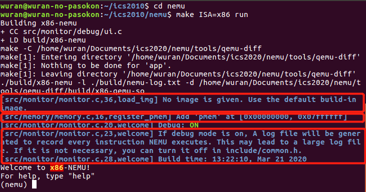
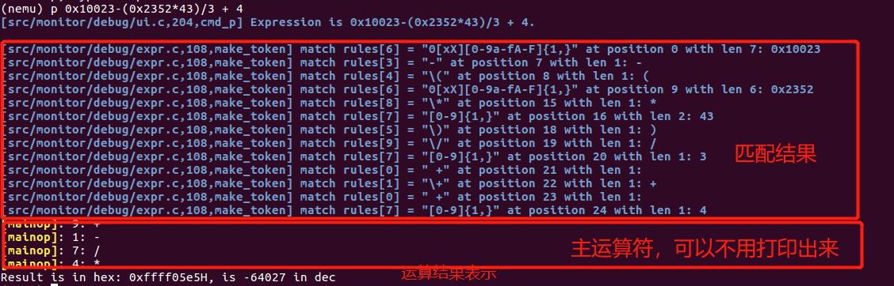
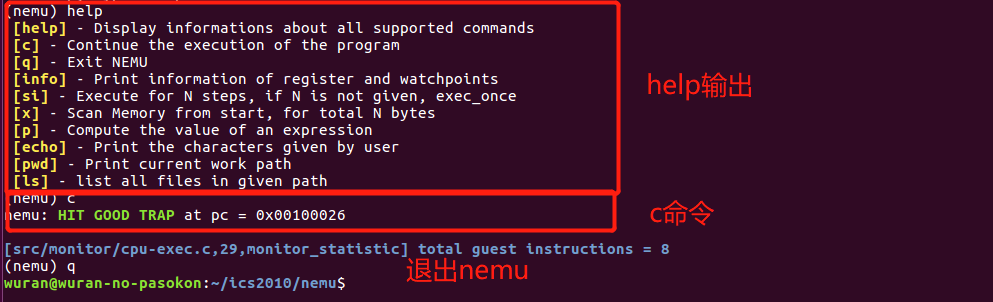
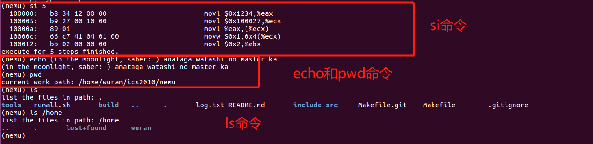
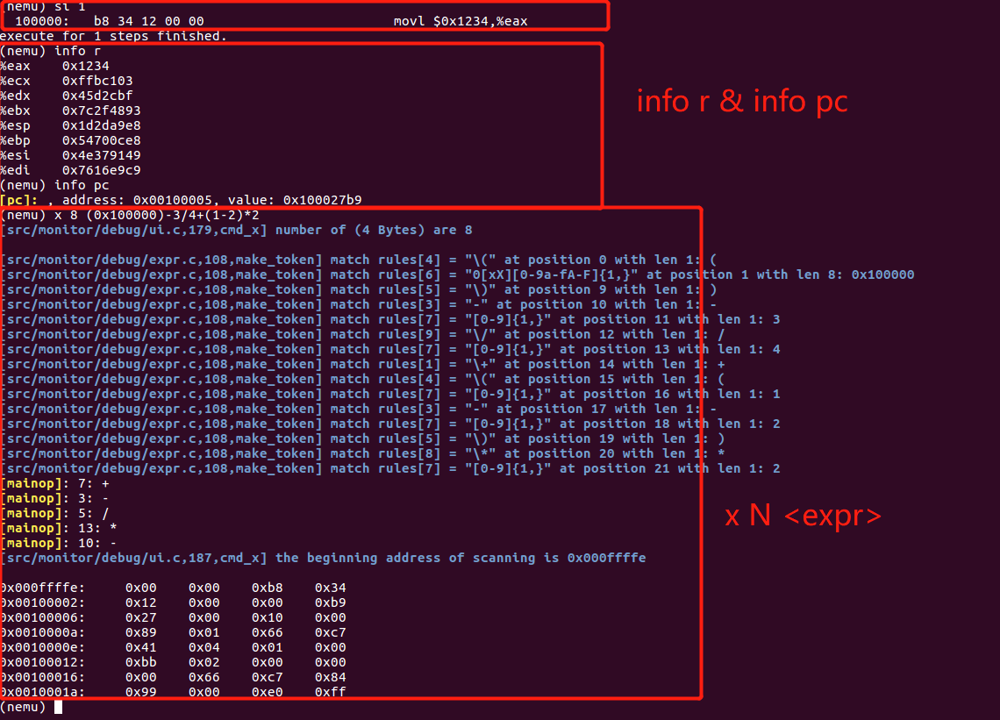

我们在PA0.5中已经下载了NEMU的源代码，并且进行了简单的编译，还在上面运行了一些经典游戏。然而当初我们并不知道NEMU用make编译时，在NEMU中发生了什么，编译后出现的terminal能用来干什么，因此本次PA1就是用来探索NEMU系统是怎么开始运行的、我们能用NEMU做什么。在开始本次PA1之前，请掌握以下C语言基础：
- C语言的指针
- C语言三种简单的数据结构struct、union、enum
- C语言函数的定义、调用
- C语言宏的使用
- C语言extern声明全局变量
- 在Linux中查找C语言函数手册(在你的terminal输入man printf看看会发生什么)
本次PA1主要在于考察大家的代码阅读能力和对计算机系统的理解。请大家一定仔细阅读本次PA1说明，我们会在每部分将所需要的解决的问题分散下去，建议大家在具体上下文中理解我们给出的问题和要求。我们将本次PA1归纳如下：
正式开始本次PA1之前，请大家先按照以下命令做好git项目的分支管理
cd ~/ics2020 ## 进入ics项目
git git commit --allow-empty -am "before starting pa1" ## 项目的commit
git checkout master ## 切换到主分支
git merge pa0 ## 合并pa0分支到master(还记得merge的作用吗？)
git checkout -b pa1 ## 创建pa1分支，并切换到pa1分支
git branch ## 检查你的所在分支是否是pa1
一定要保证你当前的分支是pa1，然后下载我们上传到Elearning的文件压缩包，解压出四个文件(codes文件夹下)：
- ui.c，复制到
nemu/src/monitor/debug/下面- reg.h 复制到
nemu/src/isa/x86/include/isa/下面- expr.c 复制到
nemu/src/monitor/debug/下面- reg.c复制到
nemu/src/isa/x86/下面
复制的时候如果没有提醒你替换文件，请核对复制的文件路径。
为了顺利完成PA1上的内容，我们首先给出以下参考资料：
前面我们提到，NEMU系统是一个x86 32位系统模拟器。对于模拟器，相必大家都不陌生。借助模拟器，我们可以在电脑上玩手机游戏，获得更好的游戏体验；借助模拟器，我们可以模拟现实场景，沉浸在对科技的赞美中；借助模拟器，我们可以拥有更多的试错机会，模拟各种实验。听起来颇有些Matrix(黑客帝国)的意味。模拟器，简单来说就是一个客观物品的替代品(替身)，这个替代品拥有和客观物品相似的组件、功能、属性。因此NEMU实际上是一个简化版的计算机系统，它拥有计算机系统所具备的组件和功能。
这里我们先对计算机系统做些简要介绍。假设你打算制作一台友好的计算机，你首先要做的就是问候你的客户。而问候这个行为是没有被明确定义的，因此你先写下了人类语言表示的字符串echo hello, my client，让你的计算机在开机之后输出这句话。然后借助现在的高级语言，你能轻易秒写出实现程序，但是这个程序只存在于你的脑海中。
为了把这个程序移植到你的计算机中, 首先要解决的第一个问题, 就是要把程序放在哪里。显然, 我们不希望自己创造的计算机只能执行小程序. 因此, 我们需要一个足够大容量的部件, 来放下各种各样的程序, 这个部件就是存储器。所有程序都被放在存储器中(存储程序)。
现在程序可以被放在存储器中，然而，还有一个问题是，谁来执行它呢？于是你创建了一个cpu(central processing unit)专门用于执行程序。目前cpu负责从存储器里面找出程序，然后进行执行。这就引出了新的问题：cpu怎么加载特定程序。首先你要在cpu和存储器里面架设一条总线(buses)，完成存储器和CPU之间的通信。然后为了加载特定程序，你又创建了一个计数器(PC)，cpu通过PC指示位置得到需要执行的程序代码，然后执行即可。
到现在为止，目前一切顺利。你的计算机能够问候客户，这是通过把问候程序加载到cpu，然后cpu根据PC直接执行实现的。然而你不希望你的计算机仅仅只能问候客户，你的计算机还应该满足客户的需求。比如某一天客户需要处理一笔账单，这笔账单有10,000条数据，此时每条数据都保存在储存器中，你很快发现你的计算机读取效率太低，原因是储存器和cpu之间通信次数太多，耗费了大量时间。于是，你又给了cpu一个附属内存，取名为寄存器组，让cpu能够存放一些临时数据，寄存器组内存小，但是可以快速完成和cpu之间的数据交换。之后客户还需要求账单的总消费，你发现你的计算机将无能为力，因为它无法执行数据之间的运算。为此你创建了一个计算单元(ALU)来复则专门的计算。
目前，这个系统基本可以满足需求了，你绘制的草图可以进行实践测试了。然而，你马上发现了问题，你的计算机看不懂你的程序，它只能接收0/1序列。你需要把程序变成机器能看懂的语言，于是你对程序制作了一个编译器进行编译，生成了0/1序列。至此，一台简单的计算机雏形出现了。然而你的计算机还需要I/O设备用于和客户之间的交互。。。(你是否对Linux计算机系统是c语言写成的存在疑问？没有计算机系统，高级程序语言c语言怎么能在计算机上运行)
事实上，先驱们提出了通用计算机模型：图灵模型、冯诺依曼模型。对图灵机来说，其具备：
- 组件：存储器(纸带)、PC(指针)、寄存器和加法器
- 功能：从PC位置取指令，并执行，然后更新指令
NEMU就是这样一台简单的计算机。其cpu(定义为在nemu/src/isa/x86/include/isa/reg.h中的结构体CPU_state，这个结构体中包含了寄存器、程序计数器pc)，NEMU同时也拥有存储器(存储器实际上就是一个大数组，定义在nemu/include/memory的pmem数组，同时还定义了内存的读写方式，从这你应该体会到项目文件的优势：各部分各司其职，只需要cpu一声令下，整个系统就能有条不紊地健康运行)。同时这个简单的模拟器实现了计算机(或者是Turling Machine)最基本的功能，其伪代码如下：
while(true){
take an instruction from pc ## 从程序计数器指示的位置取出指令
execute an instruction ## 执行取出的指令
update pc ## 更新程序计数器
}
从上面伪代码可以看出，计算机实际上就是一个孜孜不倦地执行指令的使者。这是否与你用make编译nemu后的terminal类似？事实上terminal在等待你的合法输入，接受输入后执行相关命令，执行完之后继续等待下一条指令。你可以在terminal执行以下命令：
cd ~/ics2020/nemu ## 进入nemu项目文件
make ISA=mips32 run ## 以指令集架构mips32运行
c ## cpu执行客户程序
检查你的输出，如下图所示。NEMU读取了你输入的合法字符c，然后执行对应的命令并打印了当前PC的值。
对于NEMU系统，我们就简单介绍到这里了。我们将会在下面详细介绍其文件系统和工作流程。
理解文件系统最好的方法就是先理出一颗文件目录树。在ubuntu中可以使用tree命令。即
tree -L 3 ## L参数指定level，即需要到哪一级，3指定了level=3
我们在这里先给出ics2020目录树如下：
ics2020
|-- init.sh ## 初始化脚本
|-- Makefile ## 用于打包工程提交
|-- nanos-lite ## 微型操作系统内核
|-- navy-apps ## 应用程序集
|-- nemu ## NEMU
|-- nexus-am ## 抽象计算机
|-- README.md ## markdown文件
PA的内容只需要使用nemu模块。代码nemu下的文件树如下，这个文件树大家在做PA的过程中会经常用到。
nemu
├── include # 存放全局使用的头文件
│ ├── common.h # 公用的头文件(定义了数据类型rtlreg_t, paddr_t等)
│ ├── cpu
│ │ ├── decode.h # 译码相关
│ │ └── exec.h # 执行相关
│ ├── debug.h # 一些方便调试用的宏
│ ├── device # 设备相关
│ ├── macro.h # 一些方便的宏定义
│ ├── memory # 访问内存相关
│ │ ├── memory.h # 定义内存及读写操作
│ ├── monitor
│ │ ├── expr.h # 表达式求值相关
│ │ ├── log.h # 日志文件相关
│ │ ├── monitor.h
│ │ └── watchpoint.h # 监视点相关
│ ├── nemu.h
│ └── rtl
│ ├── rtl.h # RTL基本指令
│ └── rtl-wrapper.h
├── Makefile # 指示NEMU的编译和链接
├── Makefile.git # git版本控制相关
├── runall.sh # 一键测试脚本
└── src # 源文件
├── cpu
│ └── cpu.c # 执行一条指令
├── device # 设备相关
├── isa # ISA相关的实现
│ ├── mips32
│ ├── riscv32
│ └── x86
├── main.c # 主函数
├── memory
│ └── memory.c # 访问内存的接口函数
└── monitor
├── cpu-exec.c # 指令执行的主循环
├── debug # 简易调试器相关
│ ├── expr.c # 表达式求值的实现
│ ├── log.c # 日志文件相关
│ ├── ui.c # 用户界面相关
│ └── watchpoint.c # 监视点的实现
├── diff-test
└── monitor.c
虽然文件树看起来错综复杂，我们还是可以根据不同level来一窥其真容。
首先我们看一级目录，包含了include和src两部分，这显然是一般工程项目的结构，include定义了相关库，src中实现相关库并定义功能函数。
其次我们看二级目录，由于一级目录定义了库和功能函数集，那么二级目录就涉及到具体功能了： cpu, debug, device, monitor, memory等。 cpu和memory已经介绍过了，此处我们简要介绍下monitor模块，因为PA1重点在于实现monitor。monitor模块是为了方便地监控客户计算机的运行状态而引入的。它除了负责与GNU/Linux进行交互(例如读入客户程序)之外, 还带有调试器的功能, 为NEMU的调试提供了方便的途径。从概念上来说, monitor并不属于一个计算机的必要组成部分, 但对NEMU来说, 它是必要的基础设施。如果缺少monitor模块, 对NEMU的调试将会变得十分困难。
三级目录则是在功能下面进行细分，涉及到具体的某一个功能。
在阅读工程文件时，按照不同目录级阅读将会给你一个整体上的感受，一旦头脑中有了框架，那么阅读和查找起来就相当方便了。
了解了框架之后，下一步就是先查看库文件，摸清其中定义的宏和函数。避免在看src中的代码时，对未知变量一脸迷茫。
查看任何一个项目的工作流程，终极方法就是进入main函数，阅读main函数的调用过程。此处由于main函数涉及其他方面，我们不会要求大家直接阅读main函数。
我们已经知道, NEMU是一个用来执行客户程序的程序, 但客户程序一开始并不存在于客户计算机中。我们需要将客户程序读入到客户计算机中, 这件事是monitor来负责的。于是NEMU在开始运行的时候, 首先会调用init_monitor()函数(在nemu/src/monitor/monitor.c中定义) 来进行一些和monitor相关的初始化工作。参考下图并阅读nemu/src/monitor/monitor.c源码。了解init_monitor的具体执行过程(解析参数，打开日志、加载客户镜像/程序、初始化指令、初始化正则表达式等)。

然后, monitor通过调用load_img()函数(在nemu/src/monitor/monitor.c中定义) 将客户程序从镜像文件读入到客户计算机的内存。而读入客户程序, 是为了将来让客户计算机的CPU来执行它, 因此我们需要一种方式让客户计算机的CPU知道客户程序的位置。我们采取一种最简单的方式: 约定。具体地, 我们让monitor直接把一个有意义的客户程序读入到一个固定的内存位置IMAGE_START(也就是0x100000，定义在nemu/include/memory/memory.h中)。这个客户程序是运行NEMU的一个参数, 在运行NEMU的命令中指定,如果运行NEMU时未给出客户程序, 那么monitor将会读入一个内置的客户程序。 我们把内置客户程序放在nemu/src/isa/x86/init.c中, 同时抽象出uint8_t isa_default_img[](客户程序数组内容)和long isa_default_img_size(客户程序大小)这两个变量作为API来给monitor使用。通过这两个API, monitor就可以不关心内置客户程序的具体内容, 只要将它们读入到IMAGE_START的内存位置即可(通过调用在nemu/include/memory/memory.h中的内存读写方法实现)。
接下来monitor会调用init_isa()函数(在nemu/src/isa/x86/init.c中定义), 来进行一些ISA相关的初始化工作. 这些工作主要包括:
- 记录物理内存的起始地址. 我们可以把内存看作一段连续的存储空间, 而内存又是字节编址的(即一个内存位置存放一个字节的数据), 在C语言中我们就很自然地使用一个
uint8_t类型的数组来对内存进行模拟。NEMU默认为客户计算机提供128MB的物理内存(见nemu/src/memory/memory.c中定义的pmem)。- 初始化寄存器. 这是restart()函数目前的主要功能. 在CPU中, 寄存器是一个结构化特征较强的存储阵列, 在C语言中我们就很自然地使用相应的结构体来描述CPU的寄存器结构。我们把寄存器结构体CPU_state的定义放在
nemu/src/isa/x86/include/isa/reg.h中, 并在nemu/src/cpu/cpu.c中定义一个全局变量cpu。初始化寄存器的一个重要工作是将cpu.pc的初值设置为PC_START,PC_START经过地址映射之后会得到刚才我们约定的内存位置0x100000, 这样就可以让CPU从我们约定的内存位置开始执行客户程序了。
读入客户程序并对寄存器进行初始化后, 这时内存的布局如下:
pmem:
0 0x100000
-----------------------------------------------
| | |
| | guest prog |
| | |
-----------------------------------------------
^
| |
pc
最后monitor会调用welcome()函数输出欢迎信息。现在你可以在nemu/目录下编译并运行NEMU了:
make ISA=x86 run
结果如下图，红框中表明了初始化的过程：

大家在用x86指令集编译的时候会报错assert。这是因为关于x86指令集的CPU_state变量我们留作了练习(见下节)。
在弄清NEMU执行程序具体流程前。我们需要让NEMU在x86指令集下正常运行。因此PA1第一个任务就是完成nemu/src/isa/x86/include/isa/reg.h的CPU_state结构体定义，并补全该文件中获取寄存器字节的宏定义reg_b(index)。请先阅读nemu/src/isa/x86/reg.c对寄存器的测试函数reg_test()，再完成对cpu结构体的定义。在初始化NEMU的时候，会调用reg_test()函数对结构体CPU_state进行测试。
x86 32位系统有8个32位通用寄存器(General Register)，8个16位通用寄存器，及8个8位通用寄存器。它们的关系如下所示：
31 23 15 7 0
+-----------------+-----------------+-----------------+-----------------+
| EAX AH AX AL |
|-----------------+-----------------+-----------------+-----------------|
| EDX DH DX DL |
|-----------------+-----------------+-----------------+-----------------|
| ECX CH CX CL |
|-----------------+-----------------+-----------------+-----------------|
| EBX BH BX BL |
|-----------------+-----------------+-----------------+-----------------|
| EBP BP |
|-----------------+-----------------+-----------------+-----------------|
| ESI SI |
|-----------------+-----------------+-----------------+-----------------|
| EDI DI |
|-----------------+-----------------+-----------------+-----------------|
| ESP SP |
+-----------------+-----------------+-----------------+-----------------+
其中
注意寄存器之间并不是物理独立的，比如32位寄存器eax的低16位位寄存器ax，ax的高8位和低8位分别为寄存器ah和al。关于x86 32位寄存器的更多信息，请参考上传的i386手册2.3节。
提示：在实现CPU_state结构的寄存器部分时，使用union来管理共享内存的寄存器。
当完成CPU_state结构体的定义及获取8位寄存器的函数后，重新编译并运行make ISA=x86 run，nemu/src/isa/x86/reg.c中寄存器测试通过之后，将看到NEMU的nemu提示符。此时表示monitor初始化NEMU已经完成，NEMU在等待用户输入。NEMU开始进入用户界面主循环(ui_mainloop()，定义在nemu/src/monitor/debug/ui.c中)。
用户界面主循环是monitor的核心功能, 我们可以在命令提示符中输入命令, 对客户计算机的运行状态进行监控和调试。框架代码已经实现了几个简单的命令, 它们的功能和GDB是很类似的。
在命令提示符后键入c后, NEMU开始进入指令执行的主循环cpu_exec() (在nemu/src/monitor/cpu-exec.c中定义)。cpu_exec()的循环中有较多条件编译的内容, 忽略它们之后, 我们可以看到cpu_exec()模拟了CPU的工作方式: 不断执行指令。exec_once()函数(在nemu/src/cpu/cpu.c中定义)让CPU执行当前PC指向的一条指令(非常重要), 然后更新PC。已经执行的指令会输出到日志文件nemu/build/nemu-log.txt中, 你可以打开日志文件来查看它们。
日志内容可以参考下图：

nemu/src/monitor/debug/ui.c中，cmd_c()函数(用于处理我们输入的字符c)在调用cpu_exec(uint64_t )中传入了参数-1，请思考-1代表的意义，可以查看cpu_exec()源码进行思考。其中的movl $0x1234, %eax就是一条执行过的指令啦。它表示将立即数0x1234转移到寄存器eax中。在之后我们实现了一些命令后，我们就能查看寄存器的内容了。
具体的指令定义代码位于nemu/src/isa/x86/exec/目录下。其中一个重要的部分是定义在nemu/src/isa/x86/exec/exec.c文件中的opcode_table数组, 在这个数组中, 你可以看到框架代码中都已经实现了哪些指令。其中EMPTY代表对应的指令还没有实现(也可能是不存在该指令)。
由于刚才我们运行NEMU的时候并未给出客户程序的镜像文件, 此时NEMU将会运行上文提到的内置客户程序。内置客户程序的行为非常简单, 它只包含少数几条指令, 甚至算不上在做一些有意义的事情。你可以在nemu/src/isa/x86/init.c中查看内置客户程序的具体行为。
NEMU将不断执行指令, 直到遇到以下情况之一, 才会退出指令执行的循环:
- 达到要求的循环次数.
- 客户程序执行了
nemu_trap指令. 这是一条特殊的指令, 在ISA手册中并不存在, 它是为了在NEMU中让客户程序指示执行的结束而加入的. 为了表示客户程序是否成功结束, nemu_trap指令还会接收一个表示结束状态的参数. 当客户程序执行了这条指令之后, NEMU将会根据这个结束状态参数来设置NEMU的结束状态, 并根据不同的状态输出不同的结束信息, 包括
- HIT GOOD TRAP - 客户程序正确地结束执行
- HIT BAD TRAP - 客户程序错误地结束执行
- ABORT - 客户程序意外终止, 并未结束执行
当你看到NEMU输出类似以下的内容时(不同ISA的pc输出值会有所不同):
nemu: HIT GOOD TRAP at pc = 0x00100026
说明客户程序已经成功地结束运行。退出cpu_exec()之后, NEMU将返回到ui_mainloop(), 等待用户输入命令. 但为了再次运行程序, 你需要键入q退出NEMU, 然后重新运行。
三个对调试有用的宏(在nemu/include/debug.h中定义)
- Log()是printf()的升级版, 专门用来输出调试信息, 同时还会输出使用Log()所在的源文件, 行号和函数。当输出的调试信息过多的时候, 可以很方便地定位到代码中的相关位置
- Assert()是assert()的升级版, 当测试条件为假时, 在assertion fail之前可以输出一些信息
- panic()用于输出信息并结束程序, 相当于无条件的assertion fail
上一节我们对NEMU系统做了详细介绍，这一节我们将展开PA1部分的第二个作业——表达式求值。相比大家对为什么要进行表达式求值有所疑惑：已经定义了cpu，并且已经定义了指令，为什么还需要进行表达式求值。
事实上，我们此处的表达式求值并不仅仅是(1+2)*3/4这种类型。对于以下两种表达式：
movq $0x1234, %rax ## 将0x1234移到寄存器%rax中
movq $0x1234, (%rax) ## 将0x1234移到地址R[%rax]中
大家不必拘泥汇编代码的具体行为，此处我们用两个例子旨在说明%rax和(%rax)两种寻址方式的差异。NEMU怎样理解这两个汇编代码的差异，这正是我们进行表达式求值的初衷。因此我们此处的表达式求值需要这四个条件：
- 合法的token集合
- 合法的表达式
- 解析合法表达式
- 对解析后的表达式求值
合法的token表示的是允许在表达式中出现的字符或字符集、数字、运算符等。比如数字0-9，字符或字符集a-f/A-F，*(指针解引用), 0x(16进制数)，运算符+,-,*,/等等。
有了合法的token集合，我们就可以构造合法的表达式<expr>了，借用BNF的表示，我们的表达式可以表示为
<expr> ::= <number> # 一个数是表达式
| "(" <expr> ")" # 在表达式两边加个括号也是表达式
| <expr> "+" <expr> # 两个表达式相加也是表达式
| <expr> "-" <expr> # 运算符连接表达式仍然是表达式
| <expr> "*" <expr>
| <expr> "/" <expr>
上面的表达式，其实就相当于递归过程，比如下面的例子：
3 ## 3是表达式
5 ## 5是表达式
3+5 ## <expr>+<expr>是表达式
(3+5) ## "("<expr>+<expr>")"是表达式
(3+5)*9 ## <expr>*<expr>是表达式
借用BNF表式方式，对程序语言来说，其表达范式(语法)更加严谨、清晰。这里有一份C语言BNF表达范式的文档
有了合法的表达式之后，接下来就需要对任意输入的表达式进行词法分析了。你可能已经联想到了使用正则表达式来实现。根据合法的token集合，定义特定的正则表达式模板pattern，然后扫描输入的表达式，依次匹配各个模板，将得到的token保存至tokens里面。表达式的解析就完成了。
表达式解析完成之后，下一步就是求具体值了。根据我们对表达式<expr>的BNF定义，大的表达式由小的表达式组合而来，那么我们先求得小表达式(元表达式)的值之后，再根据小表达式求大表达式的值即可。这正是一种分治法的思想。
以上我们对表达式求值过程进行了定性的描述，下面我们具体对其进行代码层面的解释。
表达式求值的代码位于nemu/src/monitor/debug/expr.c文件中。首先我们定义了一个合法token的结构如下：
typedef struct token{
int type; // token的类型用一个整数表示
char str[32]; // token的具体内容
}Token;
其中为了方面对token.type的管理，nemu/src/monitor/debug/expr.c中定义了枚举常量，你需要在里面定义不同token对应的整数值，然后在后面直接引用即可。
为了通过正则表达式对输入表达式进行解析，代码中首先定义了一个结构数组rules，用于保存正则表达式pattern和对应的类型，如下所示：
static struct rule {
char *regex; ## 正则表达式pattern
int token_type; ## pattern要提取的token类型
} rules[] = {
/* TODO: Add more rules.
* Pay attention to the precedence level of different rules.
*/
{" +", TK_NOTYPE}, // spaces
{"==", TK_EQ}, // equal
};
有了上面的rules结构数组，nemu/src/monitor/debug/expr.c中的init_regex()函数将会对rules数组中的正则表达式pattern进行编译，然后在该文件的make_token()函数中会根据已经编译的pattern在输入的表达式中逐字符匹配所有pattern，并将token的类型和token的内容保存至token结构数组tokens中，便于之后的表达式求值过程。由于空格对表达式求值没有影响，在保存token的时候将忽略空格(类型为TK_NOTYPE)，这也是为什么我们在表达式中输入不限长度空格并不会影响求值结果。
有了tokens结构数组，我们就可以开始求值了。我们以表达式(3+2)*5进行说明：
1.获取解析产生token如下：
+-----+-----+-----+-----+-----+-----+-----+
| '(' |'NUM'| '+' |"NUM"| ')' | '*' |"NUM"| ## token类型
| | 3 | | 2 | | | 5 | ## token内容
+-----+-----+-----+-----+-----+-----+-----+
2.划分子表达式(注意是从上往下递归，从下往上返回值)
(3+2) 5 (操作符op: '*') 求值为(3+2)*5
3+2 ( '('<expr>')'求值与<expr>相同) 求值为3+2
3 2 (操作符op: '+') 求值为5
3.由2求得表达式的值为25
根据以上分析。对一个表达式解析为tokens的结构数组，我们以start和end标识一个子表达式的起始位置和结束位置。然后我们给出一个求值的伪代码如下:
eval(start, end) {
if (start > end) {
Log("please check you expression\n"); ## 这里展示Log函数的使用方法
assert(0); ## 这里展示assert函数的使用方法
/* Bad expression */
}
else if (start == end) {
/* Single token.
* For now this token should be a number.
* Return the value of the number.
*/
}
else if (check_parentheses(start, end) == true) {
/* The expression is surrounded by a matched pair of parentheses.
* If that is the case, just throw away the parentheses.
* '('<expr>')' = <expr>
*/
return eval(start + 1, end - 1);
}
else {
/* We should do more things here. */
}
}
其中check_parentheses()函数用于判断表达式是否被一对匹配的括号包围着(被一对括号包围，去掉后值不变), 同时检查表达式的左右括号是否匹配, 如果不匹配, 这个表达式肯定是不符合语法的, 也就不需要继续进行求值了。我们举一些例子来说明check_parentheses()函数的功能:
"(2 - 1)" // true
"(4 + 3 * (2 - 1))" // true
"4 + 3 * (2 - 1)" // false, the whole expression is not surrounded by a matched pair of parentheses
"(4 + 3)) * ((2 - 1)" // false, bad expression
"(4 + 3) * (2 - 1)" // false, the leftmost '(' and the rightmost ')' are not matched
最后还需要注意的是，有了给定表达式，如(3+2)*5，我们怎么讲其拆解为更小的表达式：即在*处进行分裂，找出主运算符mainop。
我们根据以下规则进行分裂：
- 括号中的运算符一定不是分裂的地方，也即不是
mainop- 括号外的运算符取优先级最低的，也即最后参与运算的(如
+和*同时出现，优先考虑+)- 根据运算符结合的规则，优先级相同的，考虑最右侧的运算符
如表达式(3+2)*4-3+2/2-8，分裂如下(从上往下为分裂过程，为方便，采用了树状结构)
(3+2)*4-3+2/2 8 (-) ## 括号中为运算符
(3+2)*4-3 2/2 (+)
(3+2)*4 3 (-) 2 2 (/)
(3+2) 4 (*)
3+2
3 2 (+)
以上就是表达式求值的内容了，我们将具体任务布置如下：
- 合法的token集合为：数字、0x、+、-、*、/、(、)、空格、==、a-f/A-F。其中0x表示数字是16进制的
- 将token对应的正则表达式pattern填入rules数组中(需要补全enmu、rules)
- 完成
make_token()函数，该函数对表达式提取token，并将token类型和内容存入tokens中- 完成
expr()函数，该函数对表达式解析后的tokens进行求值
完成对应函数后，我们会在下一节中介绍怎么进行测试。因此你也可以先浏览完所有章节，然后再完成对应作业，这也是我们建议的方式。
以下给出一个运行的示例：

简易调试器是NEMU中一项非常重要的基础设施。我们知道NEMU是一个用来执行其它客户程序的程序, 这意味着, NEMU可以随时了解客户程序执行的所有信息。然而这些信息对外面的调试器(例如GDB)来说, 是不容易获取的。例如在通过GDB调试NEMU的时候, 你将很难在NEMU中运行的客户程序中设置断点, 但对于NEMU来说, 这是一件不太困难的事情。
还记得我们前面提到的NEMU初始化后nemu在等待用户命令吗？事实上，这就相当于简易的调试器，NEMU在运行程序，同时nemu提示符在提醒用户输入对应命令进行调试。有了调试功能后，我们就可以在nemu提示符下查看寄存器的内容，PC的值和对应的内容等等。
为了提高调试的效率, 同时也作为熟悉框架代码的练习, 我们需要在monitor中实现一个具有如下功能的简易调试器 (相关部分的代码在nemu/src/monitor/debug/ui.c), 如果你不清楚命令的格式和功能(有的内容已经实现了，可以作为参考)，请参考如下表格:
| 命令 | 格式 | 使用举例 | 说明 |
|---|---|---|---|
| 帮助 | help | help | 打印命令的帮助信息 |
| 继续运行 | c | c | 继续运行被暂停的程序 |
| 退出 | q | q | 退出NEMU |
| 单步执行 | si [N] | si 10 | 让程序单步执行N条指令后暂停执行, 当N没有给出时, 缺省为1 |
| 输出字符 | echo | echo hello | 输出echo后的字符串 |
| 当前路径 | pwd | pwd | 输出当前所在路径 |
| 列出文件 | ls [path] | ls /home | 列出指定路径下所有文件，path缺省时为当前路径 |
| 打印程序状态 | info subcmd | info r | 打印寄存器状态 |
| 打印程序状态 | info subcmd | info pc | 打印PC指向地址和对应地址的值(4字节内容) |
| 表达式求值 | p <expr> | p 0x1000+3 | 根据输入表达式，求表达式表示的值 |
| 扫描内存 | x N <expr> | x 10 0x100000 | 求出表达式 |
表中黑色字体的命令已经实现了，你可以在nemu提示符后输入对应命令。标橙加粗的命令是你需要实现的命令。
在实现对应命令前，我们对你可能会感到疑惑或者将会使用到的命令做说明。
为了让简易调试器易于使用, NEMU通过readline库与用户交互, 使用readline()函数从键盘上读入命令。与gets()相比, readline()提供了"行编辑"的功能, 最常用的功能就是通过上, 下方向键翻阅历史记录。事实上, shell程序就是通过readline()读入命令的。关于readline()的功能和返回值等信息, 请查阅
man readline
从键盘上读入命令后, NEMU需要解析该命令, 然后执行相关的操作。解析命令的目的是识别命令中的参数, 例如在si 10的命令中识别出si和10, 从而得知这是一条单步执行10条指令的命令。解析命令的工作是通过一系列的字符串处理函数来完成的, 例如框架代码中的strtok()。strtok()是C语言中的标准库函数, 如果你从来没有使用过strtok(), 并且打算继续使用框架代码中的strtok()来进行命令的解析, 请务必查阅
man strtok
最后我们对几个需要实现的命令做说明：
- 单步执行：事实上，我们在第二部分已经告诉了大家cpu执行一次指令的函数，大家可以回去查找和阅读相关函数内容
- 打印程序状态：寄存器打印已经在框架代码中准备了对应的API，
nemu/src/isa/x86/reg.c中的isa_reg_display(void)函数，执行info r之后，调用isa_reg_display()，在里面输出寄存器内容即可；对于打印PC，我们已经提到了CPU_state是由寄存器和PC构成的，并提供了一个全局的cpu结构体- 表达式求值 还记得上一节我们要实现的函数
expr()吗，执行p <expr>之后，调用expr()函数即可- 扫描内存 我们已经实现了表达式求值函数
expr()，因此执行x N <expr>之后，通过调用expr()函数即可获得扫描开始地址，然后对内存进行4字节逐步访问即可，如果你忘了怎样读取内存，请回到第一和二部分。
下面是已经实现好的简易调试器运行截图：



我们对上图进行下解释。首先通过si 1执行了一句指令，这句指令将立即数0x1234移到寄存器%eax中。此时发生了两件事：一是PC从最开始的初始值0x100000变成了0x100005，这表示上面的指令有5个字节长度(b8 34 12 00 00)；二是寄存器%eax的值被修改为了0x1234。因此我们执行info r打印寄存器状态时，%eax的值为0x1234。此时PC的值为0x100005，其后8个字节的内容为0x100027b9，随后我们对内存初始地址为0x000ffff4扫描了8*4个字节，对比扫描结果，查找PC位置后8个字节的内容，是否与我们info pc的结果相同。
请提交以下内容：
- nemu项目原码，压缩为zip
- nemu项目PA1上的git log日志，保存为txt格式
- 一个电子版实验报告